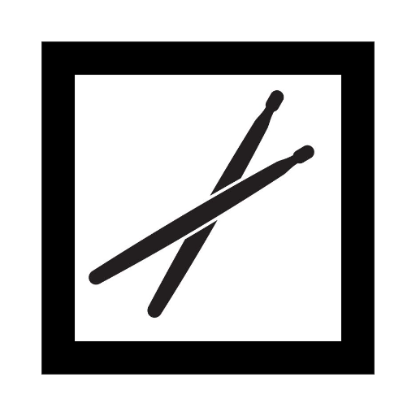
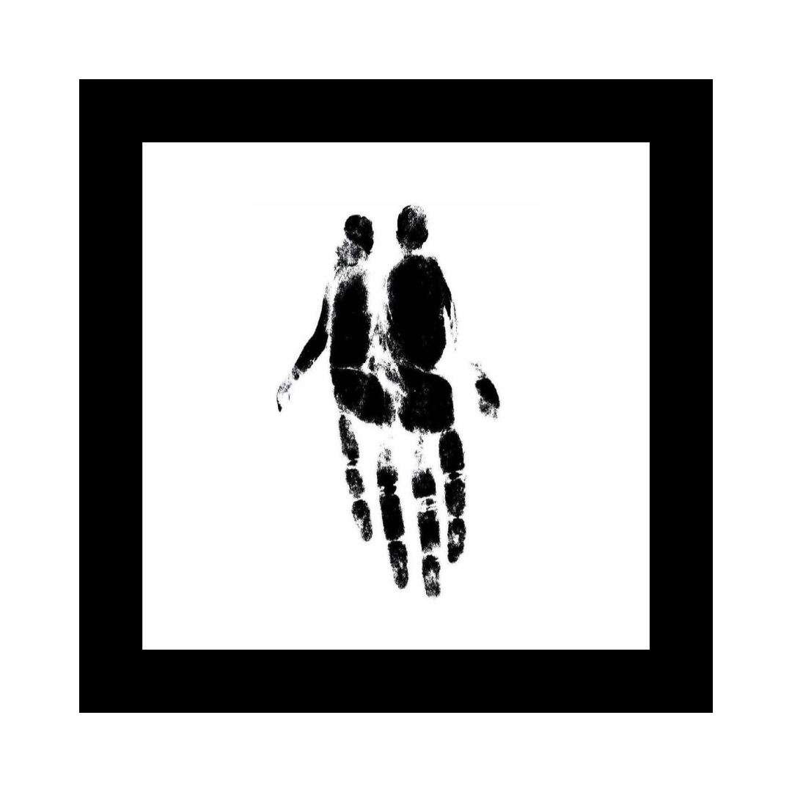
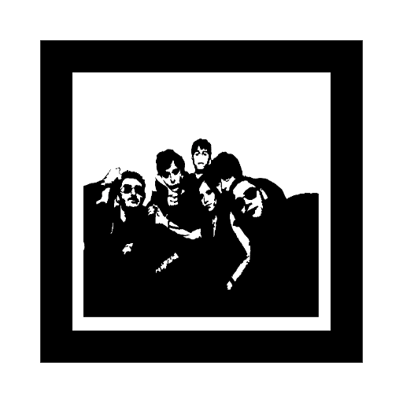

Cargando...
Iniciando cámara...
Por favor permite el acceso a la cámara
Selecciona un álbum
Enfoca un marcador para descubrir su sonido
Ruinas de Sal
Sol de Mayo

Desnudandote

Huellas

Hay algo que está muerto
Escudos
Buscando señal...